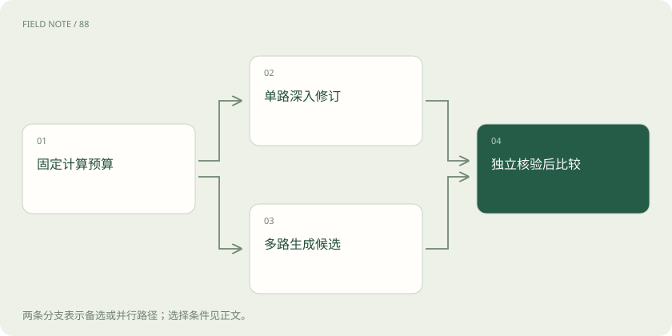

先读哪些知识
先用一个类比理解
类比只帮助建立直觉，不等同于技术的完整机制。
一图看懂
推理模型改变了什么
推理模型通常经过专门训练，使它在给出结论前更愿意展开中间计算、检查或修订。推理时计算则是部署阶段为一道题投入的计算资源，两者有关却不是同义词。普通模型也可以多次采样，推理模型也可能在很小预算下立即作答。讨论能力时应分别记录训练来源、推理资源和评估标准。
贯穿本章的例子是仓库装箱：订单需要十二件货，甲箱每箱五件，乙箱每箱三件，要求恰好装满且箱数最少。真正目标是满足整数约束并最小化箱数。模型写得详细、表现得谨慎，都不是这个目标本身。把目标写成外部可判断的条件，才有办法讨论额外计算究竟有没有帮助。
思维链是计算载体而非证书
思维链把中间步骤写进上下文，后续生成可以利用这些步骤。例如先枚举甲箱数量，再计算剩余件数，最后判断是否能由乙箱组成。这个过程把一次困难跳跃拆成较小决策，也允许发现局部算术错误。但语言上连贯的步骤可能共享一个错误前提，随后所有推导都会沿错误方向推进。
在装箱问题中，“两箱甲加一箱乙恰好十二件”看起来接近目标，实际得到十三件。若后续段落只重复这个结论，增加篇幅不会修复它。可见解释也不能被当作模型内部因果过程的完整记录；解释可能遗漏决定答案的因素。可靠性应由约束核验决定，而不是由推导长度或自信语气决定。
串行预算允许修订也会累积错误
串行计算让同一条路径继续前进：拆分问题、得到草稿、找出冲突、修改草稿。这适合后一步确实需要前一步结果的任务。装箱时先排除三箱方案，再考虑四箱方案，比没有顺序的猜测更有结构。延长上下文给了模型保存中间结果的空间，同时增加了读写这些结果的成本。
问题在于早期错误可能被当作已经证明的事实。若模型错误认定乙箱每箱四件，后面越精细越可能巩固错误。有效串行修订要回到原题逐项核对，而非只检查措辞。停止条件可以是找到满足约束的方案并证明更少箱数不可行；“再想一遍”本身并没有明确终点。
图解：同预算的两种生成路径

并行采样依靠路径差异
并行方法对同一问题生成多个候选，再投票或挑选。装箱候选可能包括四个乙箱、两个甲箱一个乙箱、一个甲箱两个乙箱。不同候选暴露不同错误，因而给选择器更多机会。自洽投票通常按最终答案聚合，但多数意见只代表样本分布中的常见答案，不代表数学证明。
若所有样本都误读包装规格，多数会一致出错。增加采样数量只能减少抽样波动，不能自动消除共同偏差。比较并行策略时要统计总生成令牌和延迟：同时调用多路可能缩短墙钟时间，却增加总成本。应把候选多样性与单纯重复区分开，判断新增样本是否真的覆盖新的解题路径。
验证器决定候选能否兑现价值
验证器可以只检查最终结果，也可以逐步检查推导。装箱的结果核验容易：将箱数乘以件数，检查合计和非负整数条件；最优性核验还要排除更少箱数。只验证可行性会让四个乙箱通过，却可能漏掉题目要求中的最少箱数证明。不同核验标准对应不同强度的结论。
学习得到的评分模型能处理更开放的答案，但也可能偏好长篇解释或熟悉措辞。独立程序规则、原始数据和人工复核各有适用范围。验证器若与生成器共享误读，搜索会把错误进一步放大。因此应先测量验证器在故意构造的错误候选上能否拒绝，再把它用于挑选大量样本。
搜索是在中间状态上分配预算
搜索与单纯生成多个完整答案的差别，在于它可以保留有希望的中间状态、展开分支并丢弃较差路径。装箱时以已选甲箱数量作为状态，再展开乙箱选择；超过十二件的分支立即剪枝。语言推理中的中间状态未必有精确边界，评分也未必能提前判断最终可行性。
过早剪枝可能丢掉正确但暂时不漂亮的路线。较宽搜索保留更多可能性，却消耗更多核验和上下文预算。不能把树形图的存在直接等同于更强推理；要检查分支依据、回退条件以及最终选择规则。搜索收益取决于候选覆盖与价值判断共同工作，而不是分支数量单独决定。
预算分配需要计入核验费用
设总预算固定，可以选择一条长推导、四条短推导或两条推导加严格核验。不存在对所有问题都最优的分配。简单算术的外部检查很便宜，通常值得留出核验资源；开放研究问题的事实查证可能比生成更昂贵，盲目扩大候选池会使验证成为瓶颈。
装箱实验可以逐步增加采样数，记录每增加一批候选带来的正确率变化。如果候选已经包含正确解而选择器仍选错，应改善核验；如果从未出现可行解，应改善生成或任务表示。把失败拆成覆盖失败与选择失败，比仅报告“多想以后分数更高”更能指导下一次资源安排。
图解：预算的四项支出
正确率曲线比单次成功更有解释力
评估需要一组未见问题，包括不同件数、无解情形和多个可行方案，防止只记住十二件这个例子。分别报告正确率、平均成本、最坏延迟和无解识别情况。比较时保持基础模型与输入一致，否则无法把收益归因于推理预算。人工挑选一次漂亮过程不能证明整体可靠性。
还要核对停止策略：允许无限重试直到成功的系统，不能与一次回答直接比较。可以给每道题相同成本上限，并记录提前完成是否节省资源。推理时扩展是一种在部署阶段搜索更好结果的方法，其边界由任务可验证性、模型已有能力与预算共同决定，不构成对真实世界正确性的通用保证。
放在一起对比
| 机制 | 提供什么 | 不能保证什么 |
|---|---|---|
| 串行修订 | 沿上下文逐步计算 | 不会继承错误前提 |
| 并行采样 | 覆盖不同候选 | 多数答案正确 |
| 独立验证 | 排除违反约束的方案 | 覆盖全部隐含要求 |
放进真实场景
十二件装箱题中，四个乙箱可行；核验还须排除少于四箱的方案，才能支持最优结论。
别踩这个误区
想一想
候选中已有正确答案却始终选错，应先改善哪里？
先检验选择器和验证标准，而不是继续增加候选。
关联阅读
资料与边界
本文为原创知识讲解。类比和图示经过简化；示例数字不代表实测或报价。整理日期：2026-11-05。文末列出对应技术的原始资料，具体功能与版本支持请以原文为准。